01 — Method
Order before volume.
Nothing new goes on top of a shot that disappears when a hand is up.
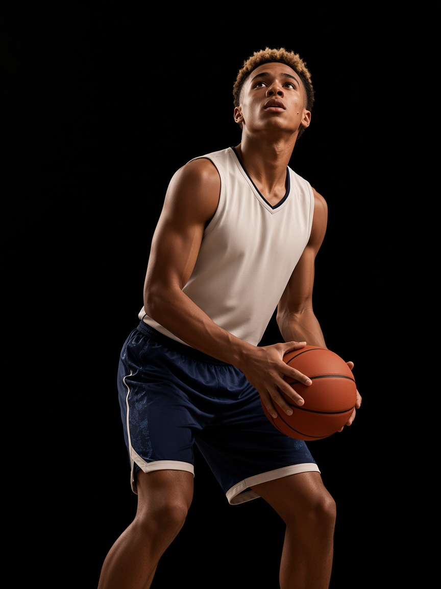
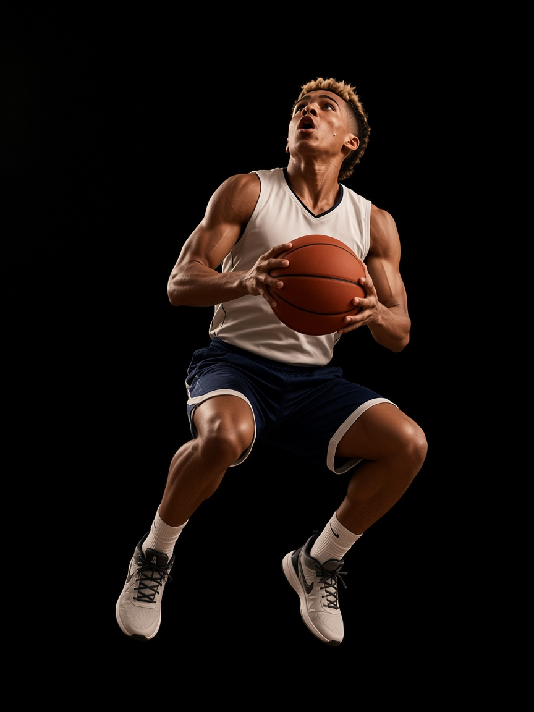
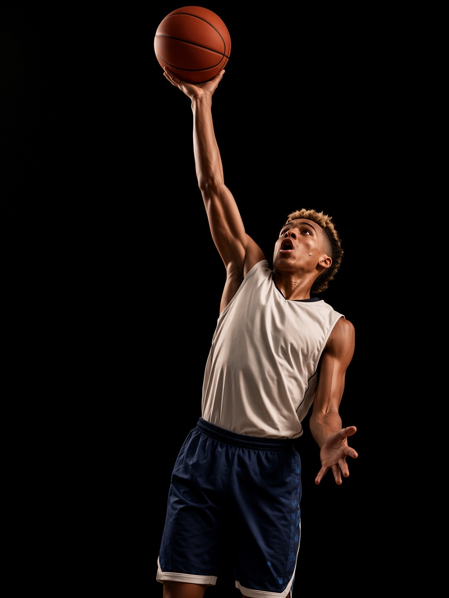
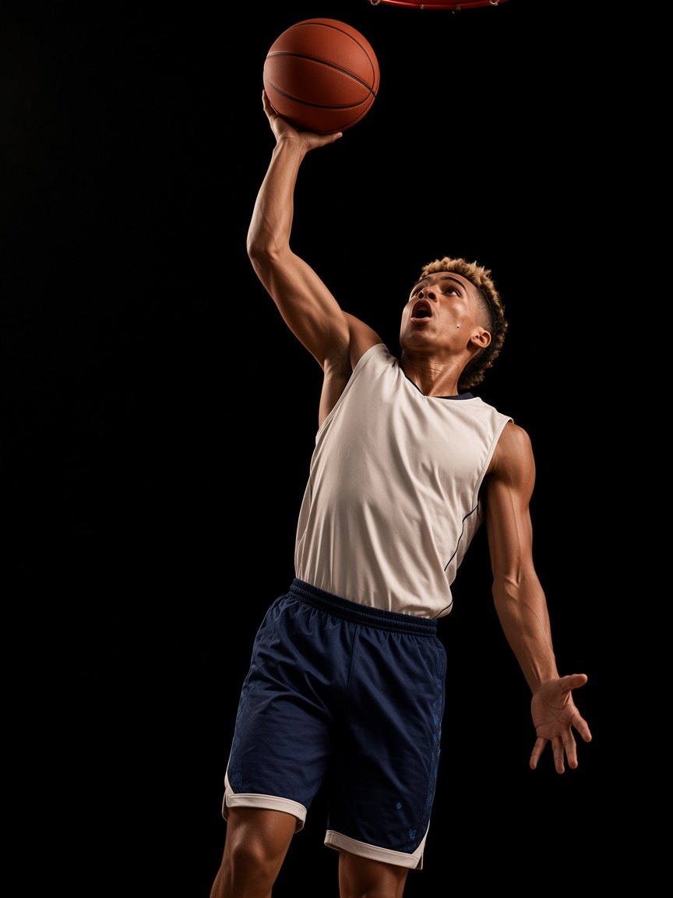
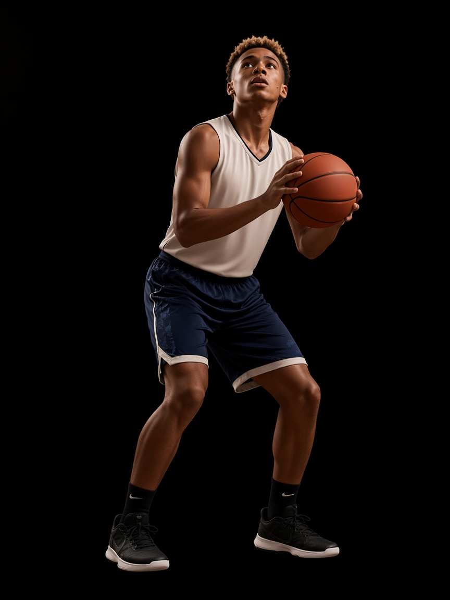
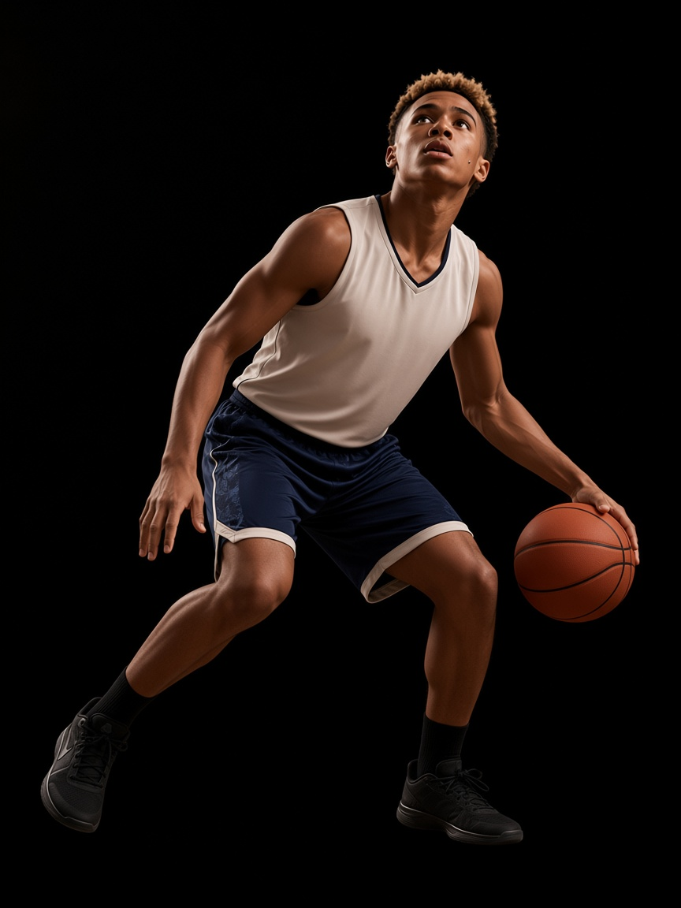
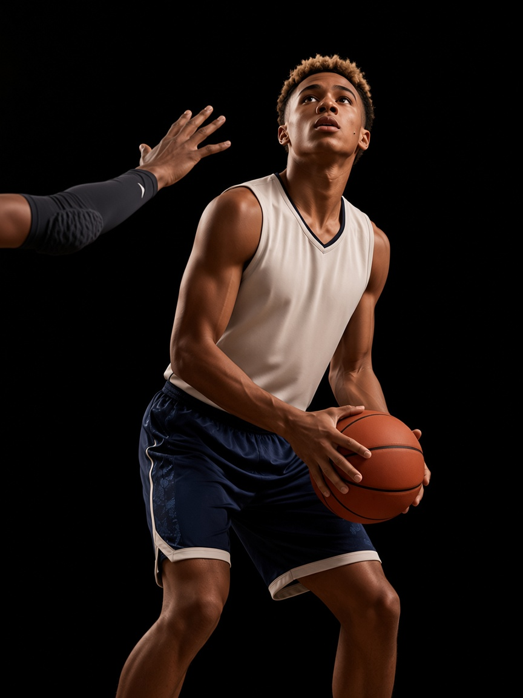
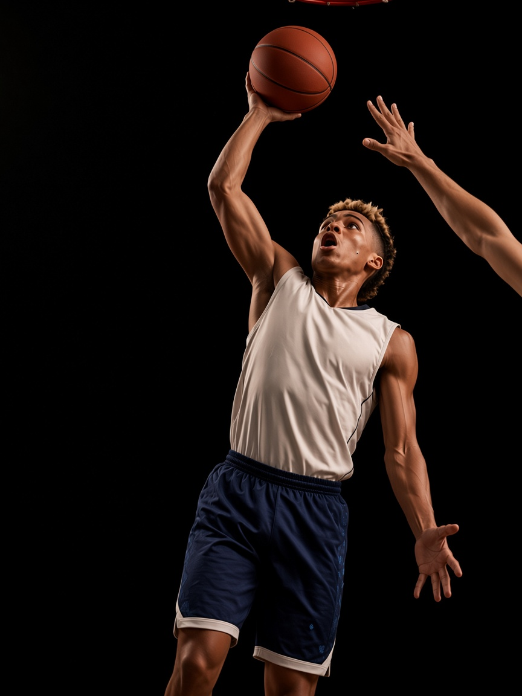
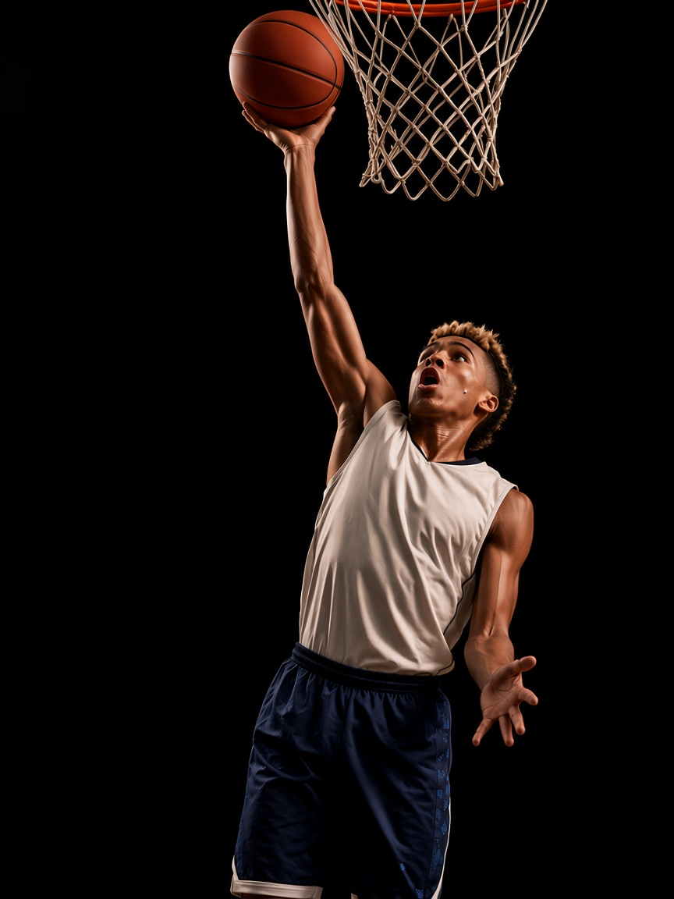
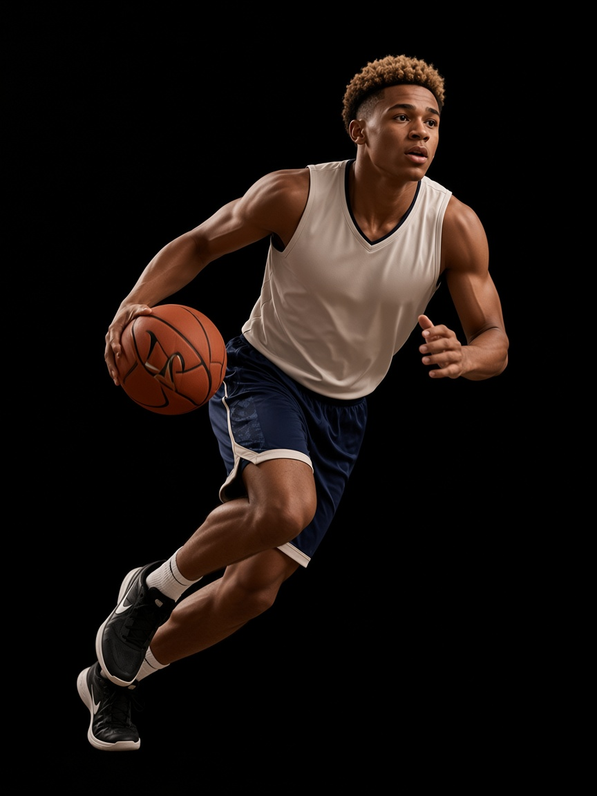
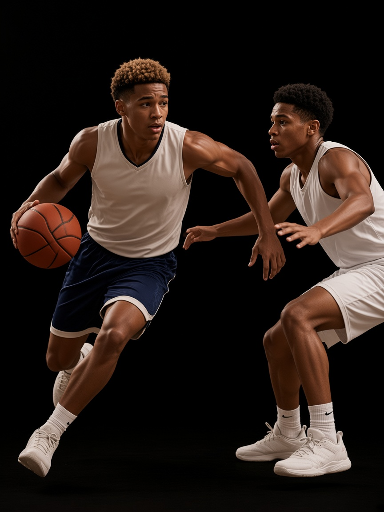
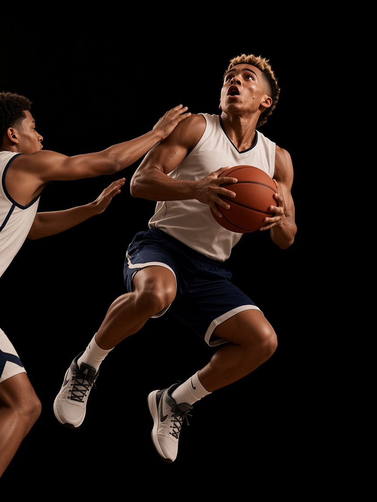
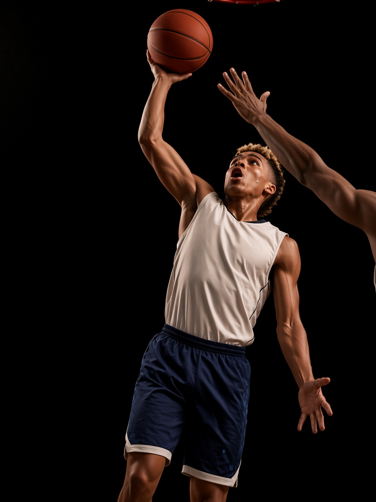
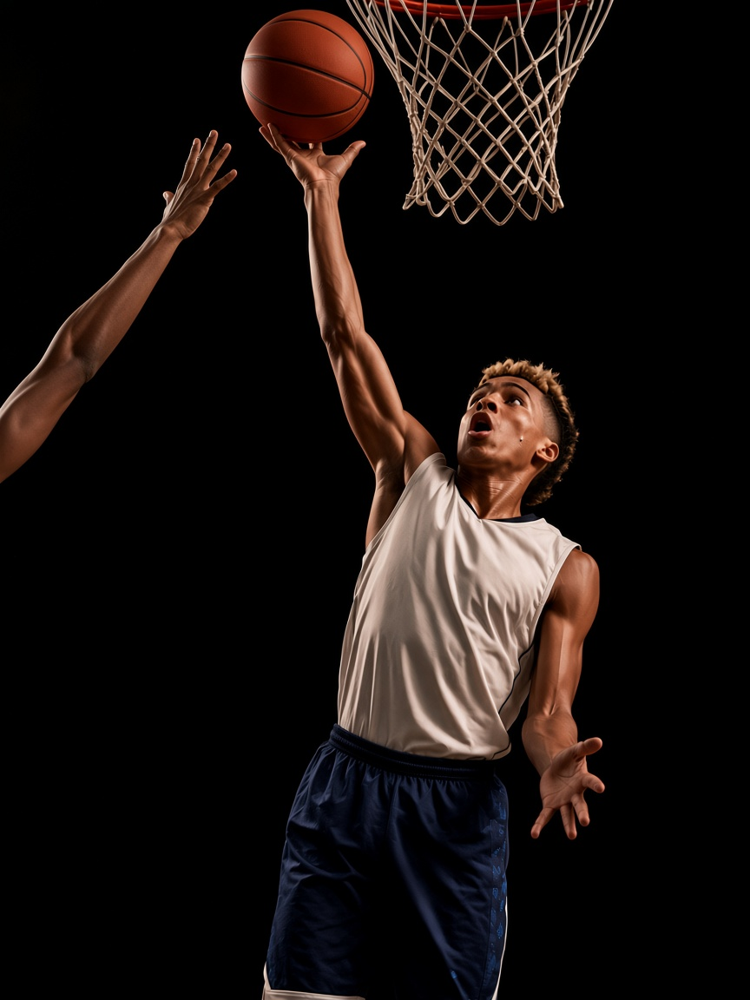


- AssessFifty minutes. Catch-and-shoot, one-dribble, closeout, finish. Two priorities leave on a card.
- InstallThose two things, until they survive speed. The card is not rewritten every week.
- TranslateSmall-sided games and the player's own film. The card changes only when the tape agrees.
0–8
Same warm-up
- Lane Two trips, both sides. Ball stays below the knee.
- Pound Right, then left. Eyes on the rim, no new move.
- Hip Outside foot down. Hold one count.
- Inside Inside foot before the next dribble.
- Two-foot Both feet, balanced, then the jump stop.
- Gate The next block waits until all four land.
8–22
Priority one
- 10 Catch-and-shoot from the spot written on the card.
- 10 One-dribble pull-up. Same spot. Same footwork.
- Contest A hand goes up only after the form holds.
- Sheet Makes and misses are both marked, then the next rep.
- Standard The number on the card. Not a feeling.
22–40
Priority two, live
- Nail Closeout starts there. High hand, short steps.
- Body The finish has someone already in the lane.
- Read Only the second line on the card. Nothing extra.
- Speed Added after the action is right, not before.
- Stop If it breaks, the rep restarts from the nail.
40–50
Clip and homework
- Clip One possession. About twenty seconds.
- Keep Two habits that showed up live.
- Retire One habit. Named, not a pile of notes.
- Home Twenty minutes. A school night can hold it.
- Next The card does not change until the tape agrees.